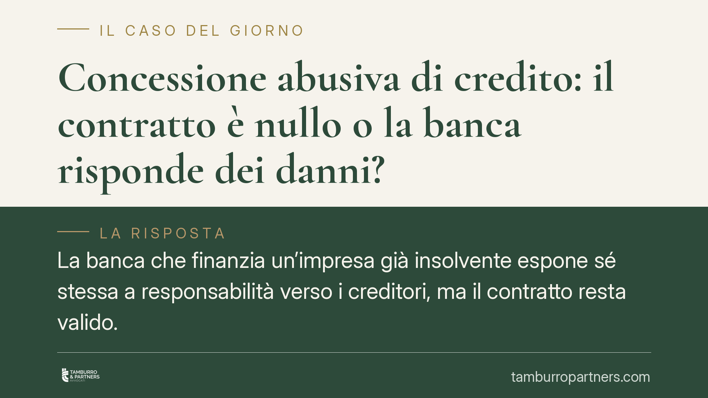

Concessione abusiva di credito: il contratto è nullo o la banca risponde dei danni?
La banca che finanzia un'impresa già insolvente espone sé stessa a responsabilità verso i creditori, ma il contratto resta valido. Una recente pronuncia del Tribunale di Milano torna sulla distinzione, fissata dalle Sezioni Unite, tra regole di validità e regole di condotta. Comprenderla è decisivo per curatori, creditori e istituti di credito nella gestione del contenzioso.

Il caso
Secondo quanto riportato, il Tribunale di Milano (sentenza del 20 gennaio 2026, della quale non risulta ancora pubblicato il numero di ruolo) sarebbe tornato su un tema ricorrente: la cosiddetta concessione abusiva di credito. Si parla di concessione abusiva quando una banca eroga o mantiene un finanziamento a favore di un'impresa che sa, o dovrebbe sapere, essere insolvente, così ritardandone artificiosamente il dissesto e aggravando il passivo a danno degli altri creditori.
La domanda che si pone il giudice è netta: questo comportamento della banca rende nullo il contratto di finanziamento, oppure genera soltanto un obbligo di risarcire il danno? La risposta, in linea con l'orientamento consolidato, è la seconda.
Inquadramento normativo
Ocorre innanzitutto sgombrare il campo da una confusione frequente. Il "ricorso abusivo al credito" è un reato previsto dall'art. 325 del Codice della crisi d'impresa e dell'insolvenza (d.lgs. 14/2019), che sanziona la condotta dell'imprenditore il quale ricorre al credito dissimulando il proprio stato di dissesto. È una fattispecie penale e riguarda il debitore, non la banca.
Altra cosa è la "concessione abusiva di credito", che è un illecito civile della banca. Non ha una norma dedicata nel Codice della crisi: la sua fonte è l'art. 2043 c.c. sulla responsabilità extracontrattuale (aquiliana), letto alla luce dei principi giurisprudenziali e dei doveri di sana e prudente gestione che gravano sugli intermediari ai sensi dell'art. 5 del Testo unico bancario. Nelle procedure concorsuali, la legittimazione ad agire in nome della massa dei creditori spetta al curatore ai sensi dell'art. 255 CCII.
Sul perché il contratto non sia nullo, il riferimento obbligato sono le Sezioni Unite della Cassazione, n. 33719/2022. La pronuncia ha ribadito la distinzione tra regole di validità e regole di condotta: la violazione di una norma di comportamento — come il dovere di valutare con prudenza il merito creditizio — non incide sulla validità del contratto, ma può fondare responsabilità e obbligo risarcitorio. La nullità (art. 1418 c.c.) presuppone invece la violazione di norme che riguardano la struttura o il contenuto dell'atto, non il modo in cui una parte si è comportata.
Implicazioni pratiche
Per il curatore. L'azione non va impostata chiedendo la nullità del contratto, ma il risarcimento del danno arrecato alla massa. La base è l'art. 2043 c.c., con legittimazione ex art. 255 CCII. Il nodo probatorio è duplice: dimostrare che la banca conosceva o avrebbe dovuto conoscere l'insolvenza e che il finanziamento ha causato un aggravamento del passivo quantificabile.
Per i creditori. La solidità del contratto bancario significa che le garanzie e i rimborsi già perfezionati non vengono travolti automaticamente. Il rimedio passa per la domanda risarcitoria e per gli ordinari strumenti revocatori, ciascuno con i propri presupposti.
Per le banche. La validità del contratto non equivale a esenzione da responsabilità. L'istruttoria sul merito creditizio, la tracciabilità delle valutazioni e il monitoraggio della posizione nel tempo diventano elementi decisivi, perché è su di essi che si misura la diligenza richiesta e, in caso di contenzioso, la prova liberatoria.
Cosa fare in concreto
- Curatore: imposta l'azione come domanda risarcitoria ex art. 2043 c.c., con legittimazione ex art. 255 CCII; non chiedere la nullità del contratto ai sensi dell'art. 1418 c.c.
- Curatore: documenta analiticamente il nesso tra erogazione e aggravamento del passivo, raccogliendo bilanci, centrali rischi e delibere di affidamento.
- Creditori: verifica tempestivamente la percorribilità delle azioni revocatorie sui pagamenti e sulle garanzie, nei termini di legge.
- Banche: conserva la documentazione dell'istruttoria creditizia e delle revisioni periodiche degli affidamenti, elemento centrale della prova di diligenza.
- Tutti: prima di agire o difendersi, fai verificare dagli estremi esatti la pronuncia di riferimento, trattandosi di decisione recente non ancora stabilizzata.
Conclusioni
Il principio è lineare ma spesso frainteso: la banca che finanzia un'impresa decotta non stipula un contratto nullo, ma può essere chiamata a rispondere dei danni. Confondere il reato dell'imprenditore (art. 325 CCII) con l'illecito civile della banca (art. 2043 c.c.) porta a impostare male l'azione. La corretta qualificazione giuridica, fin dall'atto introduttivo, è la premessa di qualsiasi strategia efficace.
---
*Contributo informativo a cura di Tamburro & Partners – Avv. Giuseppe Tamburro. Non costituisce parere legale.*
Ogni contratto ha il suo equilibrio.
Se vuoi una revisione delle clausole o una redazione su misura, scrivi allo studio. Ti rispondiamo entro un giorno lavorativo.